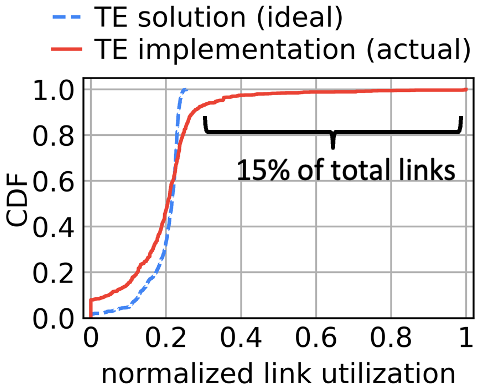
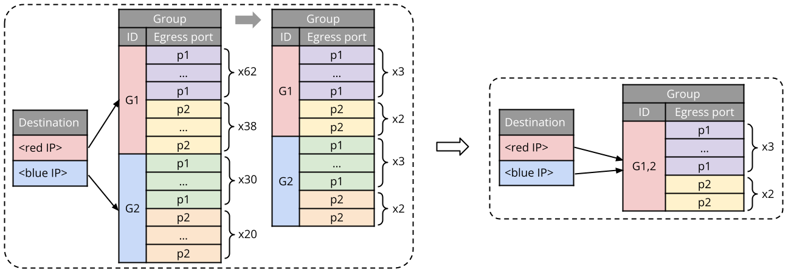
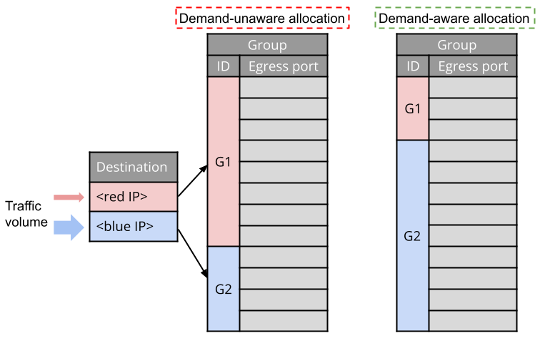

Precise Data Center Traffic Engineering with Constrained Hardware Resources
Data center networks are similar to large cities: they are at massive scale, and there exist many available roads/paths between a pair of source and destination. To move data from one place to another, we transfer data in chunks of bytes known as packets (roughly analogous to vehicles), which traverse one of the available paths. Just like what happens during rush hours—i.e., vehicles get congested on a road—packets also suffer from congestion if too many of them end up taking the same path. Congestion leads to bad application performance since more time is needed to transfer data. Therefore, we want to route packets via different paths to avoid congestion. Since the paths have different capacity (analogous to the number of car lanes), the number of packets sent onto each path should follow some calculated split ratio, which we refer to as weight distribution, in order to achieve optimal load balancing.
At path intersections—i.e., where paths split or converge—a purpose-built network switching chip exists to forward packets to an assigned path following a calculated weight distribution. More details about how a switch achieves this will be seen shortly. However, making packets precisely follow any given weight distribution is difficult because the switches have constrained hardware resources to support it. When packets are distributed imprecisely, we will observe negative outcomes such as load imbalance and congestion. A key challenge is the following: how can we achieve precise packet distribution given the constrained hardware resources? Our recent work addresses this challenge and achieves very high fidelity in following the distribution. In this blog post, I will first describe how load balancing is implemented in switch hardware and then quantify the impact when the weight distributions are not followed precisely. Finally, I will explain our proposed approach and show how it mitigates the problem.
Traffic engineering, switch hardware and precision loss
There are two types of elements in a data center network: end hosts and switches. These elements are interconnected by network links in a hierarchical, multi-rooted tree structure, as illustrated in the top right portion of Figure 1. The end hosts are colored, and switches are labeled as S1, S2, etc. A pair of end hosts with the same color might want to exchange some amount of bytes, say 100 GB (or simply 100G), which is called demand. It is simple to find a path to route one demand. But when there are so many of these demands from various end hosts, routing becomes a complicated optimization problem. This is because we also need to ensure that the load on each path is balanced. Hence we rely on a technique called traffic engineering (TE) to solve this problem. The goal of TE is to route all demands while achieving optimal load balancing. TE works as follows (shown in the top left part of Figure 1):
- With a global view of the network, a TE controller collects demands from the network.
- Next, TE solves the aforementioned optimization problem using some linear programming algorithm on a powerful server platform.
- Once the TE controller has found the optimized routing for these demands, it generates a TE solution that contains weight distributions for each demand. More specifically, the TE solution provides a concrete plan for each demand, specifying which paths to use and what fraction of the demand to allocate to each path. This TE solution is then forwarded to the switches, which are responsible for implementing the specified distributions.
Figure 1: Top: A typical TE system in data center networks. Bottom: Weighted traffic distribution in switch hardware.
Taking the red host pair in Figure 1 as an example, the TE solution specifies that the 100G red demand should be split as 62G and 38G across 2 ports on switch S3. (I will explain the strikethroughs in the figure shortly.) This blog post focuses solely on how S3 implements this desired traffic distribution. How the TE controller generates the TE solution or why the TE system works in this particular way is beyond the scope of this post.
Now, let us zoom into S3 and try to understand how it works, as depicted by the bottom half of Figure 1. Switches forward packets using two sets of configuration rules stored in their SRAM memory: destination rules and groups. A destination rule stores a pre-configured IP address and a pointer to a group. Upon receiving an incoming packet, the switch compares the destination IP address in the packet header with the IP address in each destination rule. If the two addresses match, the packet follows the pointer in the rule to the corresponding group, which determines the packet’s next destination. A group is a data structure containing a set of egress ports. The packet consults the group, which selects one of the ports uniformly at random as the egress port. For packets destined for the red host, they are assigned to group G1, while packets bound for other hosts use different groups.
To approximate the desired traffic distribution, ports p1 and p2 are replicated 62 and 38 times within group G1. This ensures that 62% of the packets will be directed to port p1, with the remaining 38% routed to port p2. However, a problem arises: these switches have very limited memory. Meanwhile, entry replication often consumes a significant amount of memory space. In other words, the groups may not fit into the switch memory. Unfortunately, a straightforward solution of simply adding more memory proves difficult due to a concept known as the power-performance-area tradeoff. On-chip switch memory cannot be built to simultaneously achieve high read/write speed, large space and energy efficiency. We thus have to seek other approaches.
For demonstration purposes, let us assume that there is only space available for 10 port entries. To fit into this space, G1’s size needs to be reduced since it currently requires 100 entries. The straightforward approach is to reduce the weights to 31:19, which is equivalent to 62:38 but smaller. However, this is still too large. Another option is to adjust the weights and round them to 3:2. This is advantageous because G1 now only consumes 5 entries! The process of reducing groups to a smaller version is called group reduction. Typically, this is handled by a group reduction algorithm running alongside the TE controller. It is important to note that the final weights of 3:2 would change the desired traffic distribution from 62G:38G (struckthrough in Figure 1) to 60G:40G (bold). This creates a difference in link loads (i.e., the absolute volume of bytes placed on a link) between what the TE solution specifies and what is actually implemented on the switch. This difference on a link is referred to as precision loss. While precision loss may seem detrimental, it is crucial to understand its impact on real-world networks, which will be discussed in the next section.
Precision loss in the wild
A good metric for quantifying the impact of precision loss is link utilization. Link utilization reflects the aggregated load on a link as a percentage. If the utilization exceeds the expected value, we know the link is overloaded. While it is trivial to assess the utilization of one link, how can we evaluate the network as a whole? The answer is to examine the distribution of link utilization. Specifically, we are interested in the common case (p50) and tail (p99 and max) link utilization.
Figure 2 presents a cumulative distribution function (CDF) of the utilization of all links measured from a large Google production data center. There are two curves in the figure: the blue dashed curve reflects the inferred (ideal) link utilization if all weight distributions are faithfully implemented, while the red solid curve represents the actual link utilization after weight adjustments in group reduction. The reality deviates significantly from the ideal approximately 15% of the total links exhibit utilization higher than the maximum ideal utilization by up to 5 times! Consequently, due to overloading caused by precision loss, the worst few links experience severe congestion.
Figure 2: Link utilization of a large Google production data center network.
While limited memory is the root cause of precision loss, it’s important to understand how limited memory affects precision loss in different ways. Let’s revisit the groups in Figure 1. The total space required depends on three factors: (1) the number of groups, (2) the number of ports per group, (3) the port weights. It turns out that all these three factors, along with the switch heterogeneity, contribute to precision loss. I will discuss them one by one:
- Number of groups. As the network scales larger, the number of groups increases, resulting in less relative memory space per group.
- Number of ports per group. The TE solution sometimes requires using many ports in a group to ensure failure resilience. This also enlarges the group.
- Skewed port weights. Some groups contain skewed weight distributions that are hard to reduce. For example, consider a distribution like 99:1—this requires a total of 100 entries. Since 1 is the smallest possible weight value, it cannot be reduced further. To make this group smaller, we have to reduce the weight of 99. However, the more we reduce it, the more precision loss occurs.
- Heterogeneity. Data centers typically comprise switches from various generations, as illustrated in Table 1. Older generation switches have memory that is 8 times smaller than that of the newer ones, making it more challenging to accommodate groups.
Table 1: Switch hardware profile in a Google production network.
| Switch generation | Memory limit |
|---|---|
| Old generation | 4096 port entries |
| New generation | 32768 port entries |
We have just seen the impact of precision loss and its root causes. The next section will explore how to minimize precision loss.
Time for some new group reduction algorithms
Recall that the focus of this work is to accurately map TE solutions to groups in switches. The key to this task lies in an efficient group reduction algorithm. The existing algorithm used in Google’s production network—called WCMP TableFitting—is inadequate in certain scenarios. We have identified opportunities for improvement, thus proposing two new group reduction algorithms. Some of you might wonder: why two? It is because each of the two algorithms focuses on a different aspect: one algorithm (named Direct Reduction) aims to find the most precise weights possible; the other algorithm (named Greedy Reduction) strives to achieve faster reduction speed by sacrificing some optimality.
Figure 3: Illustration of how group de-duplication works.
Figure 4: Illustration of how demand-aware resource allocation works.
I will omit the technical details about the algorithms. Those interested can take a look at our NSDI paper. The full implementation of our group reduction algorithms can also be found on GitHub. Here, let me just highlight the core ideas that power both algorithms:
-
Idea 1: De-duplication. Recall that packets destined for different IP addresses are handled by different groups, as Figure 3 shows. But what if these “different groups” actually appear identical? Namely, the groups contain the same set of ports, and the weights for each port are also identical. This situation is not uncommon, especially after group reduction, where groups can become identical. In such cases, de-duplicating these identical groups and reusing a single instance allows for a more efficient use of the limited memory space available in switches.
-
Idea 2: Space allocation. Groups naturally handle varying amounts of network traffic (demands), as reflected by the arrow sizes in Figure 4. Consequently, their contribution to the overall precision loss differs. Allocating a large chunk of memory space to a group serving minimal traffic would be inefficient (see the demand-unware allocation example in Figure 4). Therefore, we require a form of performance isolation. Our idea is to divide the available memory space into multiple allocations, with the size of each allocation proportional to the traffic volume of a group. In other words, each group receives dedicated space based on its traffic volume. This is illustrated by the demand-aware allocation example in Figure 4.
These simple techniques work surprisingly well. In the final section, I’d like to show you some evaluation results.
Evaluation
We evaluate the proposed group reduction algorithms using FabricEval, a traffic engineering evaluation framework developed specifically for this project. Both the proposed algorithms and the current approach (WCMP TableFitting) are implemented inside FabricEval for side-by-side comparison.
Figure 5: Common and tail link utilization.
Figure 6: Time to complete group reduction.
The previous section has mentioned that WCMP TableFitting falls short in certain scenarios. Here is a set of results showing how the new algorithms reduce precision loss compared to WCMP TableFitting. Figure 4 displays the common case (p50) link utilization and tail utilization (p99 and max) in a large-scale production-like data center network. Instead of testing in a real deployment, we model after a Google production network and evaluate with simulation in FabricEval. FabricEval allows us to run controlled experiments without interrupting user traffic. The ideal (blue) bar represents the ideal link utilization without precision loss. WCMP TableFitting exhibits as much as 67% higher link utilization over the ideal case. Both Direct Reduction and Greedy Reduction show no more than 7% higher link utilization than the ideal. Our algorithms reduce precision loss by 10x compared to WCMP TableFitting.
Precision loss is just one aspect of the story. Since these algorithms operate in an online environment, we also care about their speed. Figure 5 illustrates the time they take to complete reduction for a batch of groups. It suffices to note that the evaluation covers a range of network scenarios, from common to rare, as listed on the x-axis. One observation is that reducing a set of groups could take anywhere between a tenth of a second to hundreds of seconds, depending on their complexity. Compared to WCMP TableFitting, Greedy Reduction runs 1-2 orders of magnitude faster. Direct Reduction, on the other hand, performs similarly to WCMP TableFitting.
Of course, what I have presented above are just a few examples from a comprehensive set of experiments. More information can be found in our NSDI paper.
Conclusion
Precision loss is an inherent problem when implementing traffic engineering with limited switch memory resources. Large-scale heterogeneous data center networks have exacerbated this problem. We propose two new group reduction algorithms that can map original weight distributions in the TE solution to groups on the switch with minimal precision loss. Evaluation results show that our algorithms achieve significant improvements over the existing approach (WCMP TableFitting). Our algorithms reduce precision loss by 10x and run up to 10x faster than WCMP TableFitting under various network scenarios.
Acknowledgements. This work is a collaboration with Keqiang He (Airbnb), Rui Wang (Google), and my advisors Srinivasan Seshan and Peter Steenkiste. I would like to thank Adithya Abraham Philip, Zico Kolter, Akshitha Sriraman, Miguel Ferreira, Wei Bai, Brian Chang, Yige Hong, Weiyang Wang, Min Yee Teh and Nandita Dukkipati for their feedbacks. The CMU authors are sponsored by the U.S. Army Contracting Command under award number W911QX20D0008. The views and conclusions contained in this document are those of the author and should not be interpreted as representing the official policies, either expressed or implied, of any sponsoring institution, the U.S. government or any other entity.